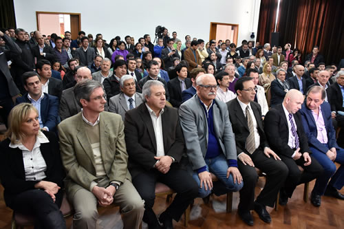

Real Chubut - Agencia de Noticias


Das Neves firmó convenios de transferencias a 27 municipios por más de 96 millones de dólares
Distribución del 15 % del bono internacional BOCADE. Es para obras públicas.
El gobernador del Chubut, Mario Das Neves, suscribió hoy con los 27 intendentes de las distintas localidades el convenio marco mediante el cual la Provincia transfiere 96.876.748,35 dólares, que serán destinados a la ejecución de obras públicas en dichas ciudades.
Ante un colmado Salón de los Constituyentes, Das Neves suscribió con los representantes municipales el acuerdo de distribución del 15 por ciento de los 645.844.988,98 dólares, que fueron obtenidos por Chubut en la colocación internacional del BOCADE, considerado el mejor que haya logrado una provincia.
El gobernador Das Neves ocupó el lugar central en el escenario del Salón y estuvo flanqueado por el vicegobernador Mariano Arcioni, el ministro Coordinador, Víctor Cisterna, además de los ministro de Economía, Pablo Oca, y de Infraestructura, Obras y Servicios Públicos, Alejandro Pagani. También asistieron funcionarios provinciales y de los diferentes municipios, así como público en general.
Antecedieron en el uso de la palabra al gobernador Das Neves, los intendentes de Comodoro Rivadavia, Carlos Linares; de Esquel, Sergio Ongarato; de Puerto Madryn, Ricardo Sastre, y de Trelew, Adrián Maderna.
Ante un cerrado aplauso de los concurrentes, el mandatario provincial felicitó al equipo económico y técnico que viajó y trabajó en la colocación internacional del bono, y a la vez aseguró que “lo más importante es que el trabajo conjunto que, muchas veces dijimos, entre Nación, Provincia y los municipios, con el correr del tiempo la sociedad lo verá en hechos”.
Luego de agradecer también a los diputados provinciales que “están presentes y a los que no lo están”, Das Neves marcó que “el camino de la convivencia y el diálogo, más allá de las dificultades, hace posible que avancemos” con una realidad política e institucional en la que los gobiernos nacional, provincial y municipales son de diferente signo político.
En ese orden, al referirse a las complicaciones económicas, Das Neves instó a “mirar acá cerquita, a otras provincias, las graves dificultades que tienen” y recordó que cuando esta gestión asumió el 10 de diciembre de 2015 “llegamos y dijimos acá hay una deuda, porque teníamos que decirle a la gente cuál era la realidad de la Provincia”.

También expresó el gobernador que “luego lo expresamos en la Legislatura y después salimos a buscar el dinero, no esperar un cheque cada 30 días del gobierno nacional porque sabíamos que con eso no iba a alcanzar”.
“Por eso nosotros teníamos esa urgencia en ese momento, porque estábamos absolutamente seguros que íbamos a tener éxito en la demanda de fondos en el exterior. Porque ya lo habíamos hecho en el 2010 y esta provincia seriamente, cumplió”, afirmó Das Neves.
Y destacó que “en un mundo globalizado, saben perfectamente que en Chubut somos serios, responsables y cumplidores”.
CASI 100 MILLONES DE DOLARES
Al margen de la millonaria suma de dinero en dólares que recibirán los municipios, el gobernador de Chubut aseguró que ello permitirá “salir de la foto y pasar a la película que queremos ver el 10 de diciembre de 2019, cuando veamos concretadas en obras todas estas inversiones”.
El gobernador se manifestó “muy feliz, esta es una realidad que no tiene retorno, este es el camino y el eje convocante. Tenemos la necesidad de seguir convocando a sectores de toda la sociedad chubutense, más allá del sector o espacio político al que pertenezca. Nos necesitamos todos, de su participación y sus ideas”.
“Una correcta distribución que significa esto de trabajar juntos, para no dispersar inversiones y para que no nos impongan obras que no son de necesidad para la gente. La prioridad la tienen los municipios que fijan cuáles son las obras trascendentales y en un trabajo coordinado con la Provincia, como ha sido todo este último tiempo en un proceso de diálogo”, concluyó el gobernador.